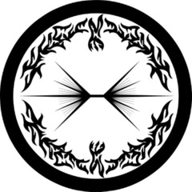

MTF Beta-1 “Cauterizers”
Task Force Mission: Mobile Task Force Beta-1 is a highly classified unit specializing in dealing with suspected cases of enemy infiltration within Foundation personnel and possible information leaks to other Groups of Interest.